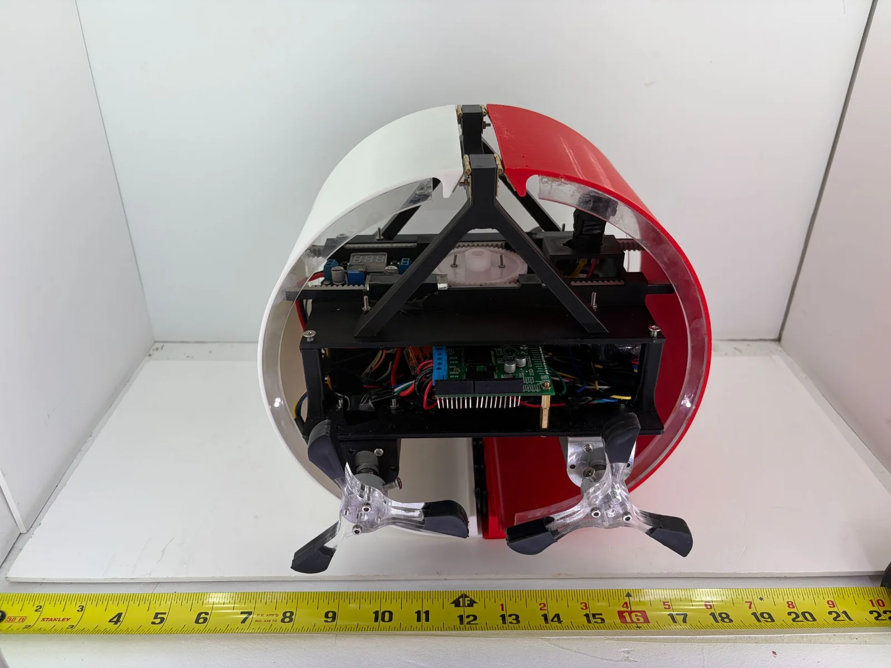
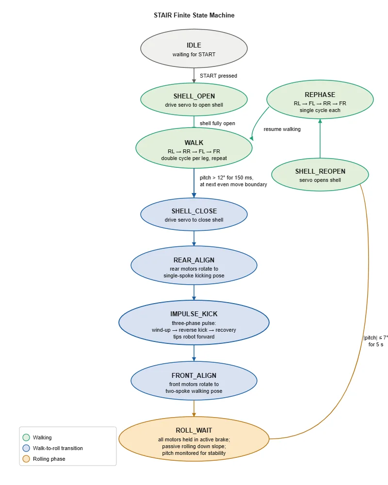
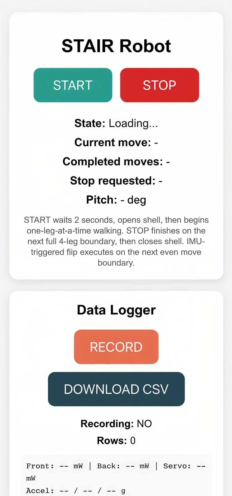
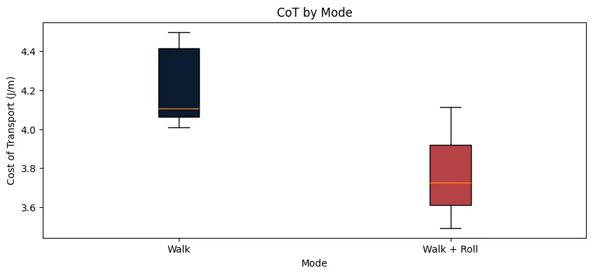
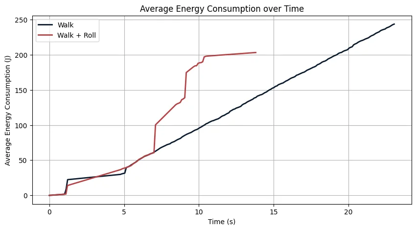

Embedded robotics · Motion control · Carnegie Mellon University
STAIR: Slope-Traversing Armadillo-Inspired Robot
An armadillo-inspired robot that uses a brief leg impulse to transition from active walking to passive, gravity-driven rolling down a slope.
My focus: embedded C++ control, encoder-feedback walking, IMU-triggered mode transitions, recovery logic, and physics simulation.

Observed reduction in mean cost of transport for walk-to-roll vs. walking alone
5 walking trials and 3 walking-to-rolling trials on a 17° slope
Preliminary trend; difference did not meet the 0.05 significance threshold
Team-level test result; the sample was small and the two test modes used different distances. My individual work centered on the control and modeling subsystems.
Introduction
The challenge
Legged robots spend energy continuously actuating their limbs, even when a downward slope could provide useful motion. STAIR explored whether an impulse-assisted switch from walking to passive rolling could lower the energy consumed per unit of distance traveled.
The objective was to build a functioning walking-to-rolling robot and evaluate its cost of transport (CoT) against walking-only motion on a real incline. If successful, the approach could inform more energy-efficient mobility strategies for robots operating on sloped terrain.

Design
My contributions
My principal responsibility was the robot's programming and controls. I wrote the Arduino/C++ firmware running on an ESP32-S3 to coordinate leg movement, detect a slope, execute the walk-to-roll transition, and manage post-roll recovery states.
I owned the motion-control firmware and contributed MuJoCo/Simscape modeling, interface controls, and integration troubleshooting. Other teammates led the power electronics, structure, shell mechanism, fabrication, and experimental data processing.
1. Encoder-feedback walking gait
Each wheg has three spokes. I implemented a one-leg-at-a-time gait with per-motor encoder calibration and feedback: each commanded move advances a wheg through a calibrated two-step (240° nominal) cycle. Inactive legs are held in active brake, and timeouts protect against stalls or missing encoder signals.
2. IMU-triggered state transitions
Rather than abruptly switching modes mid-step, the controller waits for a valid gait boundary. If the estimated pitch exceeds 12° for at least 150 ms, a transition is requested and executed at the next even-numbered move boundary.
Command the servo-driven rack-and-pinion mechanism to release the shell into its rolling configuration.
Move both rear whegs to a consistent kicking pose.
Run a controlled three-phase rear-leg motor pulse to generate the forward tipping impulse.
Align front legs for rolling; after stopping, the implemented recovery routine reopens the shell and rephases the legs.

3. Simulation before hardware testing
I built a MuJoCo model to estimate the impulse and motor torque needed to flip the robot. I also extended a provided Simscape Multibody model: I parameterized the chassis/wheg geometry, separated front and rear motor behavior, and replaced open-loop torque commands with speed-feedback control and torque saturation to more closely represent the motor drivers.
4. Operator-facing controls and integration
I implemented web-interface start/stop commands and an IMU pitch display, and helped debug and rewire electronics during integration. The team separately instrumented power consumption with INA260 sensors and collected test data through a CSV logging interface.

Evaluation
What the tests showed
On a 17° concrete slope, the team compared walking only with walking followed by rolling. Each trial logged electrical power from the front motors, rear motors, and servo/controller supply. Energy was integrated over time and normalized by robot weight and travel distance to compute CoT.
| Mode | Trials | Distance | Mean CoT |
|---|---|---|---|
| Walk only | 5 | 2.54 m | 4.219 |
| Walk → roll | 3 | 2.21 m | 3.778 |
The hybrid mode showed a 10.5% lower mean CoT. A one-sided Welch test gave p = 0.058, so the difference was not statistically significant at α = 0.05. The result suggests a promising trend, not a proven general improvement.


Weak shell magnets limited rolling distance, and shell damage ended testing early. Only three walk-to-roll trials were completed; the post-roll recovery logic was implemented but not fully tested end-to-end. Additional trials over matched distances and more slopes would be needed to validate the efficiency benefit.
Conclusion
Engineering takeaway
STAIR connected simulation, low-level feedback control, sensor-driven sequencing, and experiments on a real robot. For me, the key engineering lesson was that reliable motion involves more than selecting an algorithm: motor limits, gait phase, sensor quality, and mechanical reliability must all be handled explicitly in the control software.
Next improvements: reinforce shell closure, verify recovery after rolling, and collect more trials across multiple slopes to test whether the observed CoT reduction holds.
Figures and aggregate evaluation results adapted from the five-person STAIR final project report. Individual contribution details are based on its “Jiaming — Programming and Controls” appendix. Project results are presented as team outcomes unless otherwise noted.